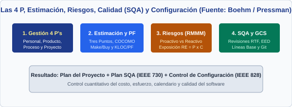

UNIDAD III. GESTIÓN, PLANIFICACIÓN Y CALIDAD DE PROYECTOS DE SOFTWARE
Estudio exhaustivo de las 4 P's de la gestión, liderazgo MOI, estructuras de equipo DD/CD/CC, canales de comunicación, principio W5HH, recursos y componentes reutilizables, estimación por Tres Puntos, COCOMO básico/II, ecuación del software de Putnam, árboles de decisión Make or Buy, métricas KLOC y Puntos de Función (PF), Eficiencia en Eliminación de Defectos (EED), gestión proactiva de riesgos (RE = P × C y Plan RMMM), aseguramiento de calidad (SQA, amplificación de defectos y Revisiones Técnicas Formales RTF) y Gestión de la Configuración (GCS IEEE 828).
3.1 Gestión y planificación de proyectos de software
1. El Espectro de la Gestión: Las Cuatro P (Personal, Producto, Proceso y Proyecto)
La gestión eficaz de un proyecto de software se centra en cuatro elementos en orden estricto: (1) Personal (el factor humano más determinante del éxito), (2) Producto (comprender su ámbito y descomposición antes de planificar), (3) Proceso (elegir el modelo y descomponer sus tareas en una matriz función × actividad) y (4) Proyecto (planificar recursos, costos, calendario y riesgos).
2. Personal, Equipos de Trabajo y Comunicación
- Los 5 grupos de participantes (Stakeholders): (1) Gestores superiores (definen los aspectos de negocio), (2) Gestores técnicos o líderes de proyecto (planifican, motivan, organizan y controlan), (3) Profesionales o ingenieros (aportan las habilidades técnicas), (4) Clientes (especifican las necesidades de negocio) y (5) Usuarios finales (quienes interactúan a diario con el software ya liberado).
- Liderazgo — El Modelo MOI (Gerald Weinberg): Un buen líder de proyecto aplica tres cualidades: Motivación (habilidad para alentar al personal técnico a producir al máximo de su capacidad), Organización (habilidad para moldear procesos existentes o inventar nuevos para traducir el concepto en producto) e Ideas o Innovación (hacer que la gente cree y se sienta creativa aun dentro de las restricciones del proyecto).
- Las 3 Estructuras de Equipo de Software (Mantei):
| Estructura de Equipo | Organización y Flujo de Comunicación | Tipo de Proyecto Ideal |
|---|---|---|
| Democrático Descentralizado (DD) | No tiene un líder permanente; se nombran coordinadores de tarea por corto plazo. Las decisiones se toman por consenso grupal y la comunicación es horizontal. | Problemas difíciles con alta incertidumbre e innovación, y proyectos de larga duración. |
| Controlado Descentralizado (CD) | Tiene un líder definido que coordina tareas globales, mientras líderes secundarios dirigen subgrupos. La comunicación entre subgrupos es horizontal y dentro del subgrupo es vertical. | Problemas grandes que pueden dividirse claramente en subsistemas o módulos independientes. |
| Controlado Centralizado (CC) | El líder del equipo resuelve los problemas de alto nivel y coordina internamente todo el trabajo; la comunicación entre el líder y los miembros es estrictamente vertical. | Problemas sencillos, rutinarios y bien conocidos con plazos de entrega muy cortos. |
Los 4 Paradigmas Organizativos de Constantine: Cerrado (jerarquía tradicional de autoridad), Aleatorio (basado en la iniciativa individual libre, excelente para innovación), Abierto (combina controles jerárquicos con toma de decisiones por consenso) y Sincronizado (la estructura del problema divide naturalmente el trabajo con poca necesidad de comunicación verbal).
Coordinación y Fórmulas de Canales de Comunicación: La comunicación puede ser formal (documentos, RTF, minutas) o informal (consultas rápidas entre pares). El número de canales bidireccionales posibles entre n integrantes crece cuadráticamente:
El Principio W5HH de Barry Boehm y las 10 Señales de Peligro de Reel: Para mantener el proyecto en curso, Boehm plantea responder 7 preguntas: Why (¿Por qué se desarrolla el sistema?), What (¿Qué actividades se realizarán?), When (¿Cuándo ocurrirá cada hito?), Who (¿Quién es responsable de cada función?), Where (¿Dónde se ubican en la organización?), How (¿Cómo se hará técnica y gerencialmente?) y How much (¿Cuántos recursos se necesitan?).
3. Objetivos de la Planificación y Pirámide de Recursos
El objetivo de la planificación es proporcionar un marco de trabajo que permita al gestor hacer estimaciones razonables de recursos, costos y planificación temporal actualizables conforme avanza el proyecto. La pirámide de recursos incluye: (1) Recursos de Entorno (SEE — Software Engineering Environment) en la base (hardware, sistemas operativos, herramientas CASE), (2) Recursos de Software Reutilizables en el centro y (3) Recursos Humanos en la cúspide. Bennatan clasifica los componentes reutilizables en cuatro categorías:
| Categoría de Componente Reutilizable | Descripción Técnica | Nivel de Riesgo |
|---|---|---|
| 1. Componentes ya existentes (COTS) | Software adquirido a un tercero, probado y listo para integrarse tal cual en el proyecto actual. | Bajo |
| 2. Componentes de experiencia completa | Especificaciones, diseños o código desarrollados en proyectos propios anteriores que son casi idénticos a los requeridos hoy. | Bajo |
| 3. Componentes de experiencia parcial | Código o diseños existentes que se relacionan con el proyecto actual pero requieren modificaciones sustanciales. | ALTO (modificar código ajeno o viejo suele costar más que reescribirlo) |
| 4. Componentes nuevos | Componentes de software que el equipo debe construir completamente desde cero. | Medio |
4. Estimación de Proyectos y Técnicas de Descomposición (Tres Puntos)
Para estimar con mayor precisión siempre se recomienda utilizar al menos dos técnicas independientes y conciliar los resultados. En la descomposición basada en el problema se divide el sistema en funciones y para cada función se calcula su valor esperado mediante la fórmula de tres puntos:
S = 2342 LOC), Lógica (Opt: 4600, Prob: 6900, Pes: 8600 → S = 6800 LOC) y Base de Datos (Opt: 2000, Prob: 3000, Pes: 3500 → S = 2917 LOC). El tamaño total esperado es 12,059 LOC. Si la productividad histórica de la empresa es de 620 LOC/persona-mes y cada persona-mes cuesta $8,000 USD: el esfuerzo será 12,059 / 620 = 19.45 persona-meses y el presupuesto estimado será 19.45 × $8,000 = $155,600 USD.
5. Modelos Empíricos de Estimación: COCOMO Básico, COCOMO II y Ecuación de Putnam
Los modelos empíricos tienen la forma general E = A + B × (ev)^C. El modelo más utilizado en la historia de la ingeniería de software es COCOMO (Constructive Cost Model) propuesto por Barry Boehm:
| Modo del Proyecto en COCOMO | Características del Proyecto | a | b | c | d |
|---|---|---|---|---|---|
| Orgánico | Proyectos pequeños y sencillos en los que trabajan equipos pequeños con buena experiencia en la aplicación y requisitos poco rígidos. | 2.4 | 1.05 | 2.5 | 0.38 |
| Semiacoplado | Proyectos intermedios en tamaño y complejidad donde equipos con niveles mixtos de experiencia satisfacen requisitos medianamente rigurosos. | 3.0 | 1.12 | 2.5 | 0.35 |
| Empotrado | Proyectos que deben desarrollarse dentro de un conjunto de restricciones muy estrechas de hardware, software y operación en tiempo real. | 3.6 | 1.20 | 2.5 | 0.32 |
6. La Decisión Desarrollar o Comprar (Make or Buy)
Para decidir racionalmente si conviene desarrollar a la medida, reutilizar módulos propios, comprar un paquete comercial o subcontratar a un proveedor externo, se construye un árbol de decisión y se calcula para cada rama:

Figura 3.1: Integración de las 4 P, Estimación COCOMO, Riesgos y Calidad. Fuente: Boehm (2000) y Pressman (2010).
Video Explicativo del Tema 3.1
Fuente del video: Gestión de Proyectos de Software — https://www.youtube.com/watch?v=gLBiAwmDdzk
3.2 Métricas del proceso, del proyecto y de calidad del software
1. Diferencia entre Medida, Métrica e Indicador y Dominios de Medición
| Concepto | Definición Formal (IEEE / Pressman) | Ejemplo Práctico |
|---|---|---|
| Medida | Proporciona una indicación cuantitativa de la extensión, cantidad, dimensiones, capacidad o tamaño de algún atributo de un producto o proceso. | En una revisión técnica se descubrieron 12 errores. |
| Métrica | Medida cuantitativa del grado en que un sistema, componente o proceso posee un atributo dado (relaciona dos o más medidas). | Se descubrieron 12 errores en 3 revisiones = 4 errores por revisión. |
| Indicador | Métrica o combinación de métricas que proporciona una visión profunda del proceso o proyecto y permite al gestor tomar decisiones correctivas. | Si la tasa de errores en diseño subió 40% respecto al promedio histórico, hay que reforzar las revisiones antes de codificar. |
Dominio de Proceso (Estratégico) vs. Dominio de Proyecto (Táctico): Las métricas de proceso se recopilan a lo largo de todos los proyectos y durante largos periodos para mejorar la madurez organizacional (con ética de métricas de Grady: nunca usar métricas privadas para castigar individuos). Las métricas de proyecto permiten al líder ajustar el flujo de trabajo y evaluar la calidad día a día.
2. Métricas Orientadas al Tamaño (LOC) vs. Orientadas a la Función (Puntos de Función — PF)
Las métricas basadas en Líneas de Código (LOC / KLOC) son sencillas de contar al finalizar, pero dependen del lenguaje de programación y penalizan el código conciso y bien diseñado. En cambio, los Puntos de Función (PF) propuestos por Allan Albrecht miden la funcionalidad entregada al usuario independientemente del lenguaje mediante cinco parámetros del dominio de información:
| Parámetro del Dominio de Información | Peso Simple | Peso Medio | Peso Complejo |
|---|---|---|---|
| 1. Entradas Externas (EE): Pantallas o formularios de captura del usuario. | 3 | 4 | 6 |
| 2. Salidas Externas (SE): Informes, recibos, pantallas de resultados calculados. | 4 | 5 | 7 |
| 3. Consultas Externas (CE): Búsquedas en línea que recuperan datos sin modificar archivos. | 3 | 4 | 6 |
| 4. Archivos Lógicos Internos (ALI): Agrupaciones lógicas de datos o tablas dentro del sistema. | 7 | 10 | 15 |
| 5. Interfaces Externas (IE): Archivos o APIs compartidos con sistemas externos. | 5 | 7 | 10 |
Cuenta_Total = 200 + 200 + 140 + 60 + 28 = 628. Si la suma de los 14 factores es Σ(Fi) = 46, entonces PF = 628 × [0.65 + 0.01(46)] = 628 × 1.11 = 697.08 ≈ 697 PF.
3. Métricas para la Calidad del Software (Corrección, Mantenimiento, Integridad, Disponibilidad y EED)
- Corrección: Grado en que el software lleva a cabo su función requerida; se mide en
defectos por KLOCdurante el primer año de uso. - Facilidad de mantenimiento: Se mide indirectamente con el Tiempo Medio de Cambio (TMC) (tiempo promedio para analizar, diseñar, codificar, probar y distribuir una solicitud de cambio).
- Integridad (Seguridad ante ataques): Se calcula como
Integridad = Σ [1 − amenaza × (1 − seguridad)], donde amenaza es la probabilidad de que ocurra un ataque y seguridad es la probabilidad de repelerlo. - Fiabilidad y Disponibilidad: Con el Tiempo Medio de Fallo (TMF) y el Tiempo Medio de Reparación (TMR):
Modelos de factores de calidad: El modelo clásico de McCall agrupa 11 factores en tres ejes: Operación del producto (corrección, fiabilidad, eficiencia, integridad, facilidad de uso), Revisión del producto (mantenibilidad, flexibilidad, facilidad de prueba) y Transición del producto (portabilidad, reusabilidad, interoperabilidad). El modelo FURPS (Hewlett-Packard) y el estándar vigente ISO/IEC 25010 (SQuaRE) actualizan esta taxonomía.
Video Explicativo del Tema 3.2
Fuente del video: Métricas y Estimación IFPUG — https://www.youtube.com/watch?v=apTIvDk2u7c
3.3 Gestión de riesgos: Identificación, clasificación y estrategias proactivas y reactivas
Todo riesgo de software posee dos características esenciales: incertidumbre (el acontecimiento que caracteriza al riesgo puede o no ocurrir; no existen riesgos con 100% de probabilidad, pues esos ya son restricciones o hechos) y pérdida (si el riesgo se convierte en realidad, ocurrirán consecuencias no deseadas o pérdidas económicas, de tiempo o de calidad).
1. Estrategias de Riesgo Reactivas vs. Proactivas
| Estrategia Reactiva («Apagar Fuegos») | Estrategia Proactiva (Ingeniería de Software Madura) |
|---|---|
| Monitorea el proyecto en busca de riesgos probables, pero reserva los recursos para actuar únicamente cuando el riesgo ya se convirtió en un problema real. Pressman la denomina la escuela «Indiana Jones» («no te preocupes, pensaré en algo cuando estalle»). Si falla la mitigación tardía, el proyecto entra en crisis. | Comienza mucho antes de que inicie el trabajo técnico: se identifican los riesgos potenciales, se valora su probabilidad e impacto, se ordenan por importancia y se establece un Plan RMMM para evitar que el riesgo ocurra (mitigación) y tener listo un plan de contingencia si llega a materializarse. |
2. Identificación y Clasificación de los Riesgos del Software
- Riesgos del proyecto: Amenazan el plan del proyecto (presupuesto, calendario, personal, recursos, clientes y requisitos). Si se hacen realidad, es probable que la planificación temporal se retrase y los costos suban.
- Riesgos técnicos: Amenazan la calidad y la planificación temporal del software a producir (problemas de diseño, implementación, interfaz, verificación y mantenimiento, ambigüedad de especificaciones o tecnología de punta no probada).
- Riesgos del negocio: Amenazan la viabilidad comercial del software. Los 5 principales son: (1) Riesgo de mercado (construir un producto excelente que nadie quiere comprar), (2) Riesgo estratégico (construir un producto que ya no encaja en la estrategia comercial), (3) Riesgo de ventas (el equipo comercial no sabe cómo venderlo), (4) Riesgo de dirección (perder el apoyo de la gerencia) y (5) Riesgo de presupuesto (perder los fondos asignados).
- Clasificación por grado de conocimiento (Charette): Riesgos conocidos (se descubren al evaluar el plan y el entorno), Riesgos predecibles (se extrapolan de la experiencia en proyectos anteriores, como la rotación de personal) y Riesgos impredecibles.
3. Proyección del Riesgo, Exposición al Riesgo (RE) y Plan RMMM
Para cada riesgo identificado se estima su probabilidad de ocurrencia P (entre 0.0 y 1.0) y el costo o impacto C si el riesgo se materializa, calculando la Exposición al Riesgo (RE — Risk Exposure):
Aplicando el Principio de Pareto (80/20), cerca del 80% de la exposición total al riesgo proviene del 20% de los riesgos más críticos; sobre ellos se documenta el Plan RSGR / RMMM (Mitigación, Supervisión y Gestión del Riesgo).
Video Explicativo del Tema 3.3
Fuente del video: Gestión de Riesgos en TI — https://www.youtube.com/watch?v=gnnssd_uVJc
3.4 Control y aseguramiento de la calidad del software: Conceptos, Revisiones y RTF
1. Conceptos de Calidad y Costo de la Calidad
La calidad del software se define como la concordancia con los requisitos funcionales y de rendimiento explícitamente establecidos, con los estándares de desarrollo explícitamente documentados y con las características implícitas que se espera de todo software desarrollado profesionalmente.
- Calidad de diseño vs. Calidad de concordancia: La calidad de diseño abarca las características que los diseñadores especifican para un elemento (requisitos, especificaciones); la calidad de concordancia es el grado en que las especificaciones de diseño se aplican durante la fabricación o codificación.
- Control de calidad vs. Garantía de calidad (SQA): El control de calidad es una serie de inspecciones, revisiones y pruebas utilizadas a lo largo del proceso para asegurar que cada producto de trabajo cumpla sus requisitos. La garantía o aseguramiento de calidad (SQA) consiste en las funciones de auditoría e información a la gerencia.
- El Costo de la Calidad: Incluye todos los costos incurridos en la búsqueda de la calidad y se divide en:
- Costos de prevención: Planificación de la calidad, revisiones técnicas formales (RTF), equipo de pruebas y capacitación.
- Costos de evaluación: Inspecciones entre procesos, calibración, mantenimiento de equipos y ejecución de pruebas.
- Costos de fallo interno: Surgen cuando se detecta un error antes de la entrega (costos de retrabajo, reparación y análisis del modo de fallo).
- Costos de fallo externo: Asociados con defectos encontrados después de que el producto se ha enviado al cliente (resolución de quejas, devolución y sustitución, soporte telefónico y trabajo de garantía).
2. Evolución de la Calidad y Aseguramiento de Calidad del Software (SQA — IEEE Std 730)
La gestión de calidad evolucionó desde la simple inspección final hasta el control estadístico de procesos (Shewhart), la Gestión de Calidad Total (TQM — Deming, Juran, ciclo PDCA Planificar-Hacer-Verificar-Actuar) y Seis Sigma (DMAIC: Definir, Medir, Analizar, Mejorar y Controlar, buscando un máximo de 3.4 defectos por millón de oportunidades). El grupo independiente de SQA redacta el Plan de SQA (regido por IEEE Std 730), audita productos de trabajo y aplica el SQA Estadístico mediante el Principio de Pareto: identificar el 20% de las causas vitales (como especificaciones incompletas o mala comunicación con el cliente) que originan el 80% de los defectos.
3. Revisiones del Software y Revisiones Técnicas Formales (RTF / FTR)
Las revisiones actúan como un filtro temprano en el proceso de ingeniería de software para evitar el fenómeno de amplificación de defectos (un error de diseño que no se detecta temprano se multiplica por 1.5x a 3x al pasar a la codificación y por mucho más en las pruebas). Los tipos de revisión van desde las revisiones informales de escritorio y los recorridos (walkthroughs) hasta las inspecciones de Fagan y la Revisión Técnica Formal (RTF):
| Aspecto de una RTF | Regla y Directriz Obligatoria según Pressman e IEEE Std 1028 |
|---|---|
| Participantes y Duración | Deben participar entre 3 y 5 personas. La preparación previa de cada revisor no debe exceder 2 horas, y la reunión de revisión debe durar menos de 2 horas, enfocándose en una parte específica y pequeña del software. |
| Roles en la Reunión | Productor (Autor) que presenta el producto terminado; Líder de la revisión que evalúa si está listo y modera la agenda; Revisores que buscan errores previamente; y Registrador que anota por escrito todos los problemas detectados. |
| Veredicto Final | Al concluir, los asistentes firman una de tres decisiones: (1) Aceptar el producto sin modificaciones, (2) Rechazar el producto por errores graves, o (3) Aceptar el producto provisionalmente sujeto a corregir errores menores. |
| Directrices de Oro | 1. Revisar el producto, NUNCA al productor (autor). 2. Fijar una agenda y mantenerla. 3. Limitar el debate y las refutaciones. 4. Enunciar las áreas de problemas, pero no intentar resolver cada problema durante la reunión. 5. Tomar notas escritas y usar listas de comprobación (checklists). |
Video Explicativo del Tema 3.4
Fuente del video: Universidad Católica San Antonio de Murcia (UCAM) — https://www.youtube.com/watch?v=TdMMRVrwRJk
3.5 Gestión de la configuración del software (GCS): Elementos, Versiones y Control de Cambios
El cambio es inevitable durante todo el ciclo de vida del software (nuevas condiciones de negocio, nuevos requisitos del cliente, reorganizaciones o restricciones presupuestarias). La Gestión de la Configuración del Software (GCS / SCM) es un conjunto de actividades sombrilla diseñadas para: (1) identificar el cambio, (2) controlar el cambio, (3) garantizar que el cambio se implementa adecuadamente y (4) informar del cambio a todos los interesados.
1. Identificación de Elementos de Configuración (ECS) y Líneas Base (Baselines)
- Elemento de Configuración del Software (ECS / SCI): Cualquier unidad de información creada como parte del proceso de ingeniería de software que se coloca bajo control de configuración (especificaciones de requisitos, modelos de diseño, archivos de código fuente, suites de casos de prueba, manuales de usuario y scripts de base de datos).
- Objetos Básicos vs. Objetos Agregados: Un objeto básico es una unidad de texto o código individual creada por un ingeniero (ej. un módulo
ProductoBLL.vbo una sección de la ERS). Un objeto agregado es una colección de objetos básicos y otros objetos agregados (ej. la Especificación Completa del Diseño). Cada objeto se identifica por su nombre único, descripción, lista de recursos y realización, relacionándose en un grafo de evolución. - Línea Base (Baseline — IEEE Std 610.12): Es una especificación o producto que ha sido revisado formalmente y sobre el que se ha llegado a un acuerdo, y que de ahí en adelante sirve como base para un desarrollo posterior y puede cambiarse solamente a través de procedimientos formales de control de cambios. Antes de que un ECS sea línea base puede cambiarse de manera informal y rápida; una vez que pasa una RTF y se convierte en línea base, queda «congelado» bajo control formal.
2. Control de Versiones y Control de Cambios
- Control de versiones: Combina procedimientos y herramientas (como Git / GitHub) para gestionar las diferentes versiones y variantes de los objetos de configuración creadas durante el proceso. Permite reconstruir cualquier edición previa o mantener ramas en paralelo sin sobrescribir el trabajo de otros desarrolladores.
- Proceso Formal de Control de Cambios:
- El usuario o desarrollador presenta una Solicitud de Cambio formal.
- Se evalúa técnicamente el impacto del cambio y se genera un Informe de Cambio.
- La Autoridad de Control de Cambios (ACC / CCB) revisa el costo, riesgo e impacto y decide aprobar o rechazar la petición.
- Si se aprueba, se genera una Orden de Cambio de Ingeniería (OCI / ECO); el desarrollador realiza un check-out (control de acceso y sincronización) de los ECS afectados, aplica la modificación, pasa una revisión SQA/RTF y realiza el check-in para liberar la nueva versión de la línea base.
- Auditoría de configuración e Informes de estado (Contabilidad de estado): La auditoría complementa a la RTF verificando que no se hayan introducido cambios no autorizados y que todos los documentos relacionados se hayan actualizado. Los informes de estado responden en todo momento: ¿Qué pasó?, ¿Quién lo hizo?, ¿Cuándo pasó? y ¿Qué más se vio afectado?
Video Explicativo del Tema 3.5
Fuente del video: Ingeniería de Configuración y Versiones — https://www.youtube.com/watch?v=bn6lAO6p95k
Autoevaluación Interactiva de la Unidad III
Responde las siguientes 5 preguntas sobre Gestión, Planificación, Riesgos, Calidad y Configuración: